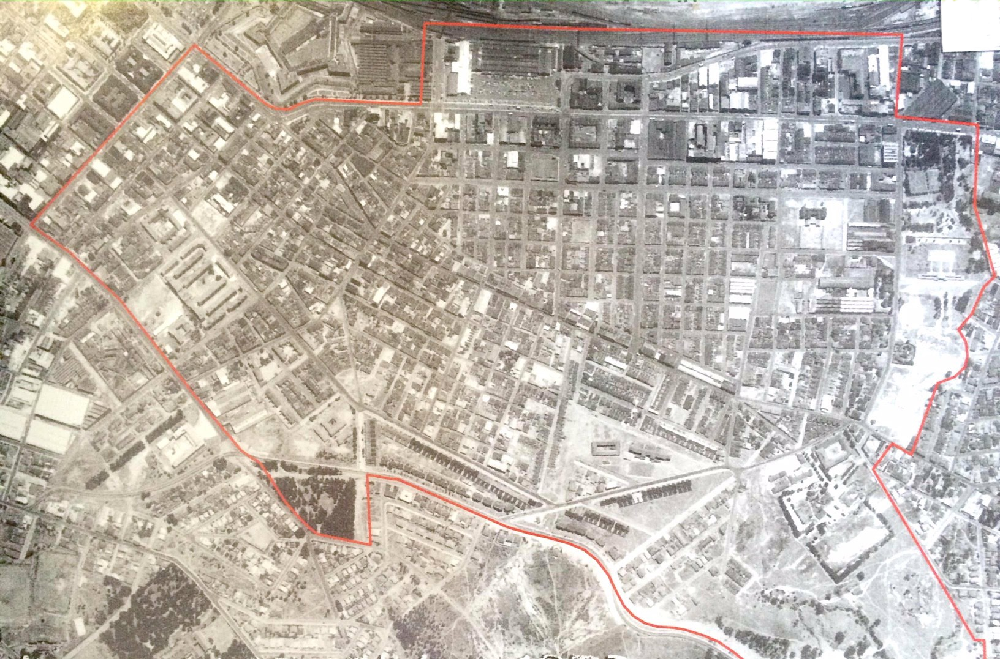
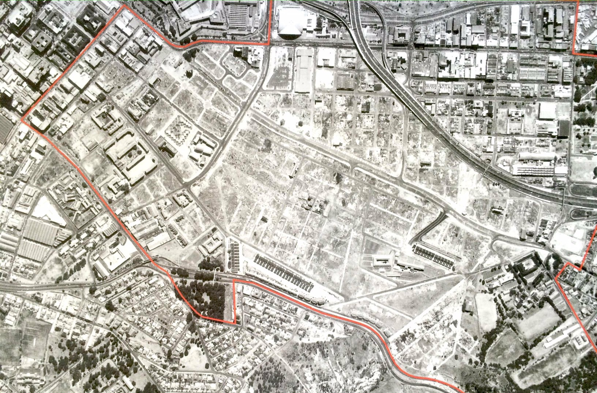
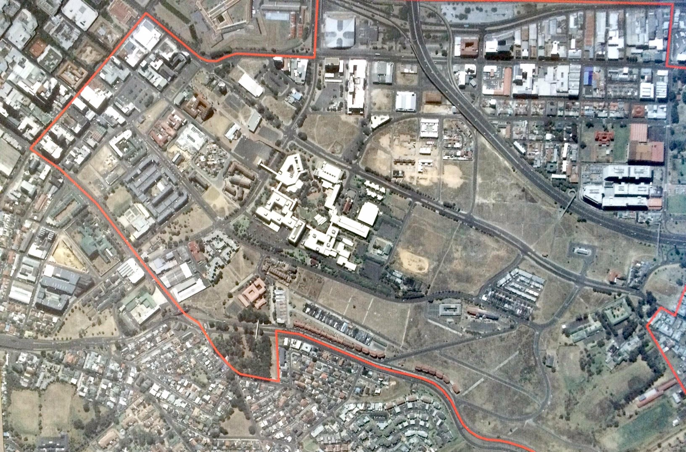

Temporal resolution – comparing satellite images and topographic maps
Temporal resolution
Temporal resolution is the time it takes for a satellite to take an image of the exact same area on Earth. This depends on how long it takes the satellite to orbit Earth and return to the same point. The temporal resolution for Landsat is 16 days, which means every 16 days an image of the same location is taken.
It is concerned with how often the image is taken and how long it is sensed each time.
Temporal resolution is useful for studies of climate change and identifying land-use change.
Historical aerial photography can be used to compare land use of an earlier time with land use shown in recent satellite imagery.
Example
Remote sensing is being used to solve land claims in District Six in Cape Town. The following photos show how the land use has changed in this area in the years shown in the photographs.
In 1953 District Six is a thriving residential suburb of Cape Town.
The photograph from 1983 shows how District Six was cleared of residential houses as a result of forced removals due to apartheid laws.
In the photograph taken in 2010 we see that District Six has been rebuilt as a residential suburb, post apartheid, as land use claims were recognised with the help of aerial photographs.

District 6 aerial photograph 1953 
District 6 aerial photograph 1983 
District 6 aerial photograph 2010